Infraestructura reproducible
Docker Compose con WordPress, MariaDB, WP-CLI y Mailpit. Scripts idempotentes para instalar, configurar y sembrar el catálogo.
Tienda de productos gastronómicos con WordPress, WooCommerce y Docker. Catálogo, checkout con RUT, envío gratis, pagos de prueba y un tema propio.
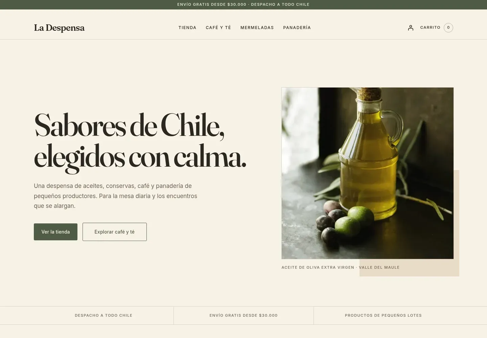
La Despensa es una tienda ficticia de alimentos chilenos: aceites, conservas, café, té, artesanías y panadería. El objetivo fue construir el recorrido completo de compra y entender WooCommerce desde dentro, no solo desde el panel.
El proyecto cubre infraestructura, catálogo, impuestos, envíos, cupones, pagos de prueba, correos transaccionales, diseño responsive y personalizaciones PHP sobre el checkout por bloques.
Diseño propio, sin frameworks CSS. Tipografía Fraunces e Inter, paleta cálida y foco en la legibilidad del catálogo.
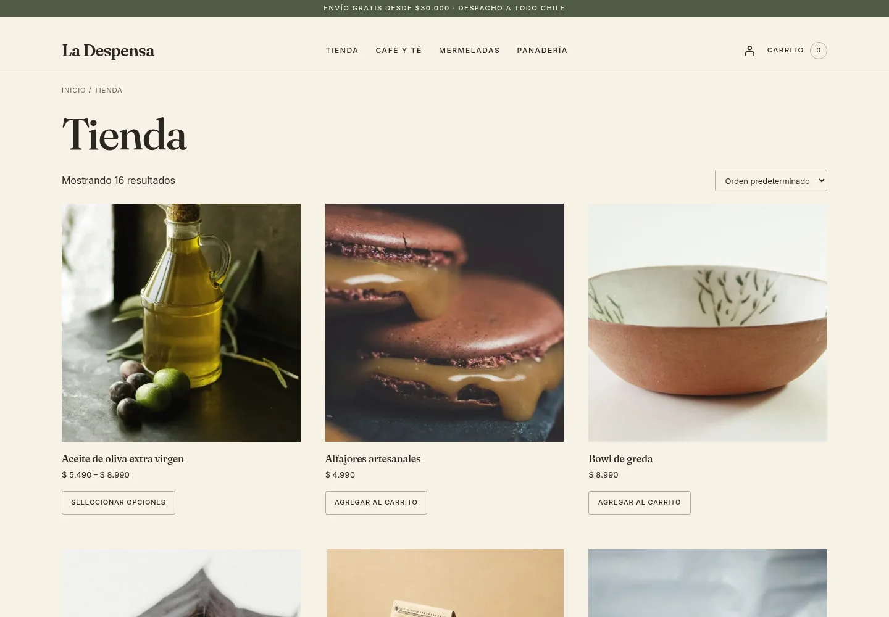
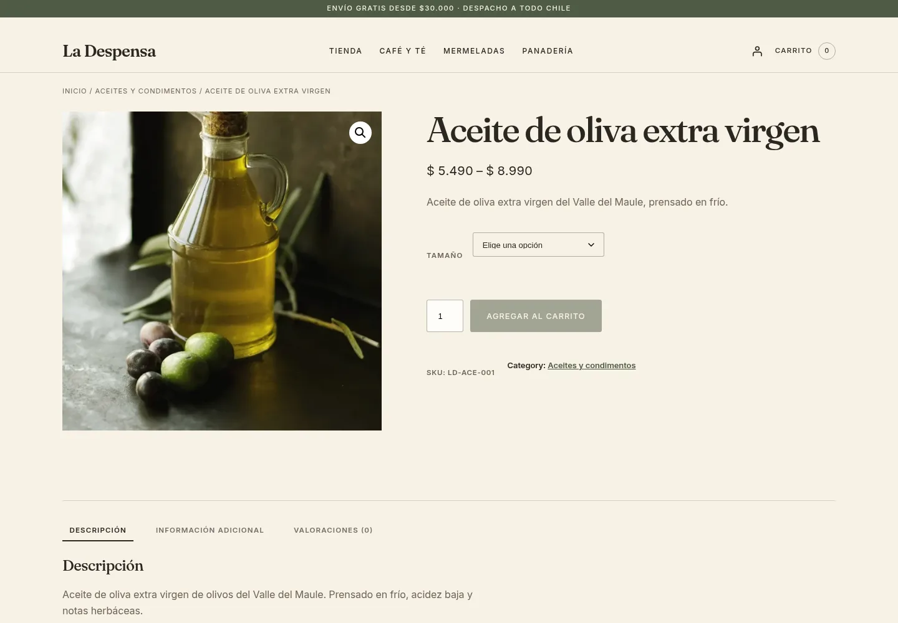
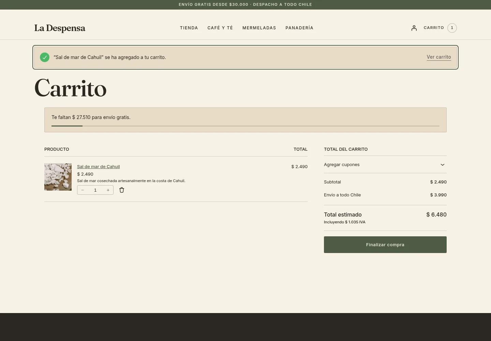
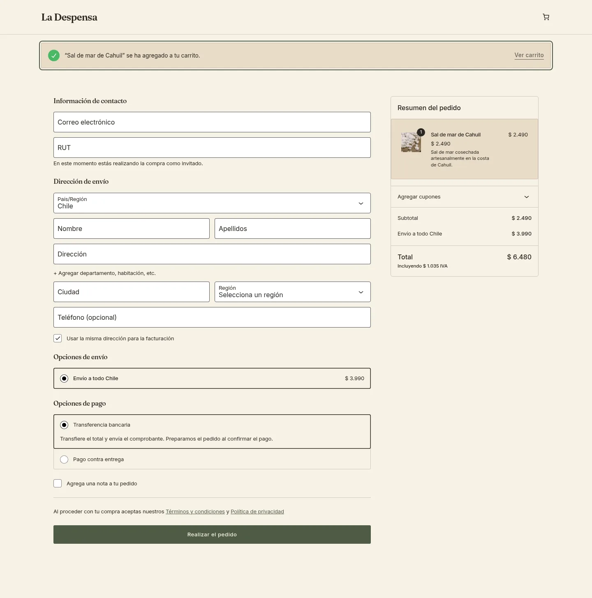
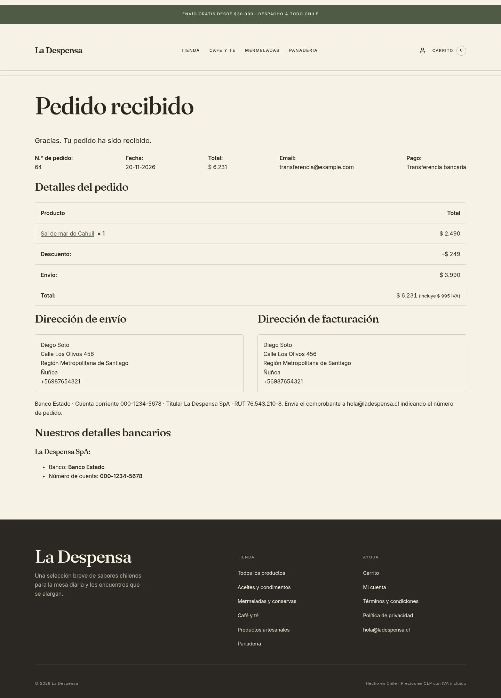
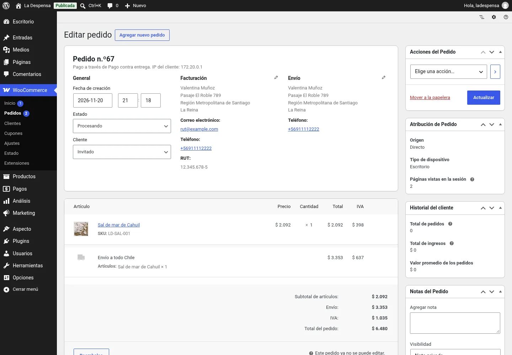
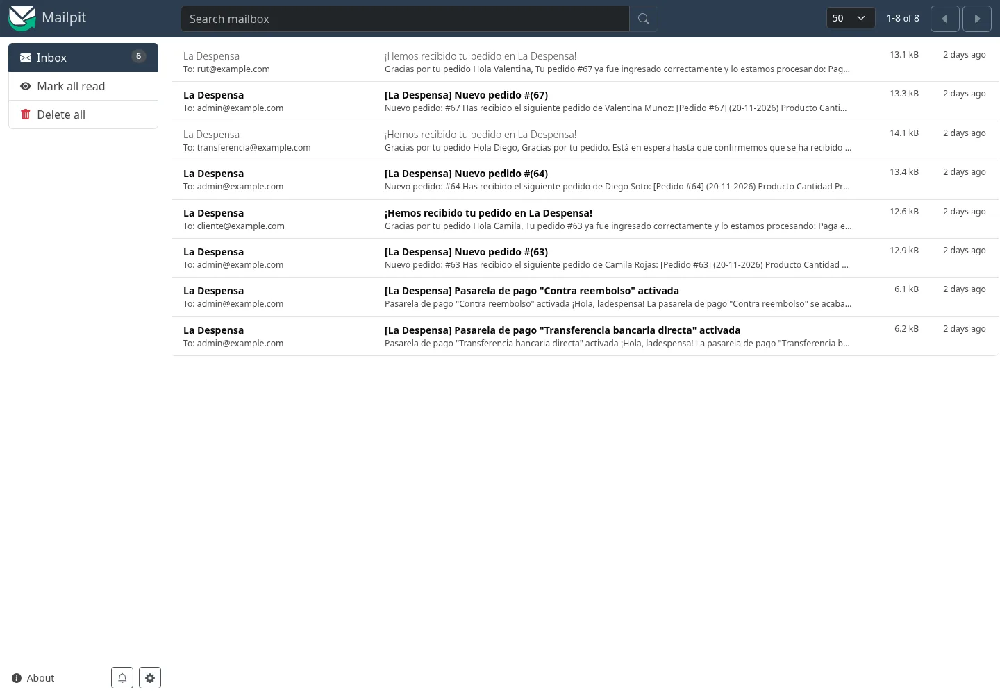
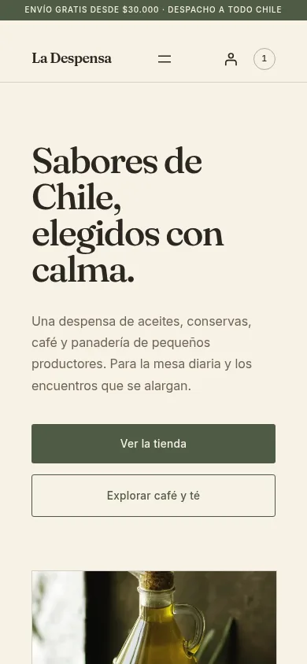
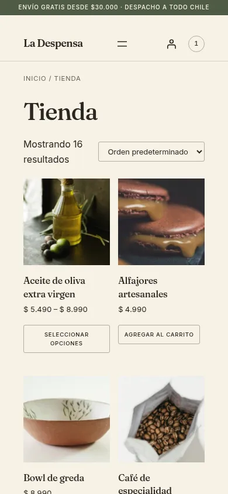
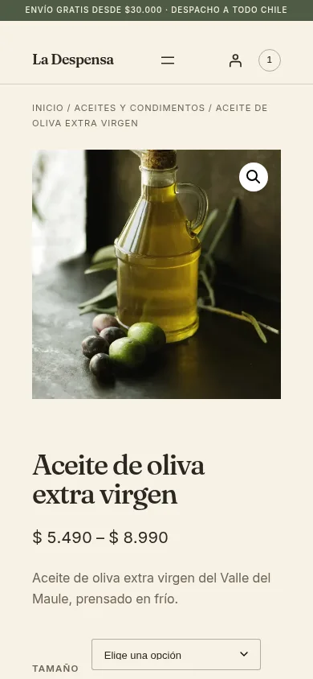
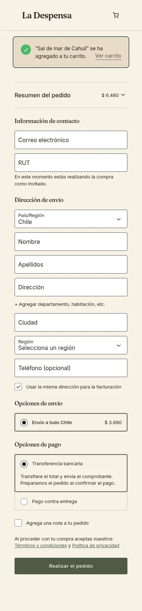
Docker Compose con WordPress, MariaDB, WP-CLI y Mailpit. Scripts idempotentes para instalar, configurar y sembrar el catálogo.
Productos simples y variables, atributos globales, inventario, SKU, categorías, impuestos y envíos.
RUT obligatorio con validación de módulo 11 sobre la API de campos adicionales del checkout por bloques.
Aviso con barra de progreso que se actualiza por AJAX y elimina la tarifa plana al alcanzar el mínimo o usar cupón.
Cupones, pago contra entrega, transferencia, correos transaccionales y descuento de stock por pedido.
Tema hijo, fuentes locales, imágenes WebP, `srcset`, `sizes`, precarga del hero y revisión responsive.
Las partes que más aprendizaje dejaron.
www-data al UID/GID del usuario. El core vive en un volumen; wp-content en bind mount para editarlo y versionarlo.woocommerce_register_additional_checkout_field. woocommerce_checkout_fields ya no aplica al checkout de bloques.srcset y sizes explícitos, más precarga del hero con imagesrcset.theme.json, shortcodes convertidos a bloques dinámicos y JavaScript para el contador del carrito.Mediciones locales después de la optimización.